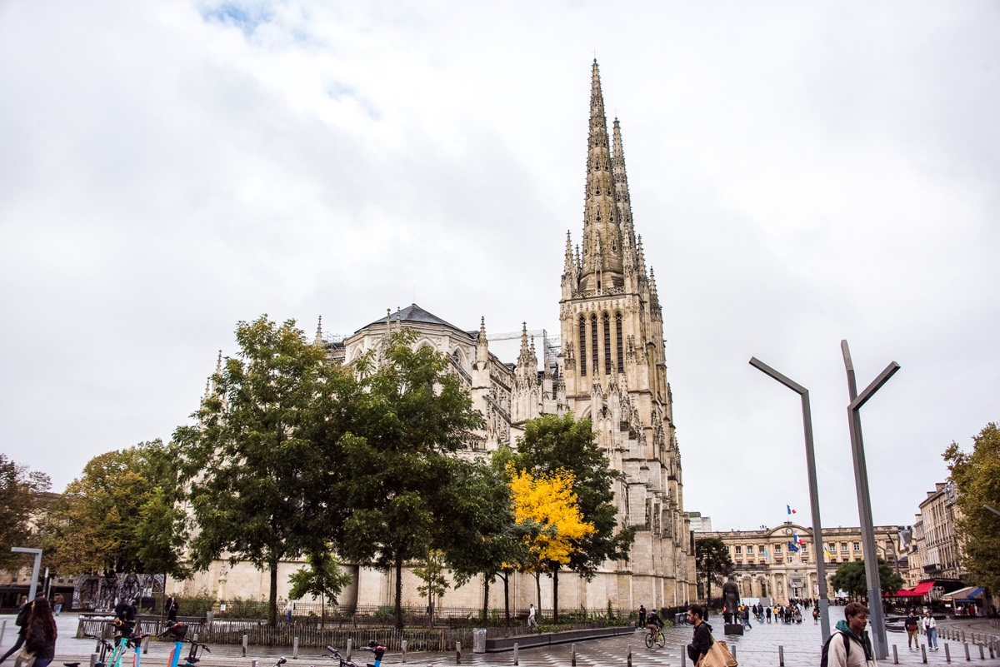
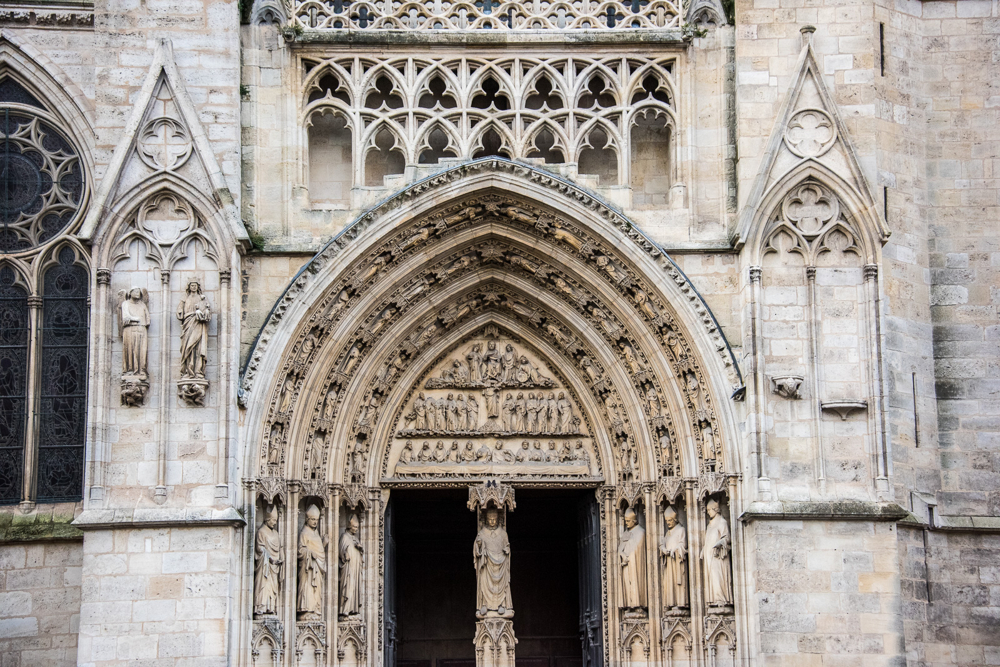
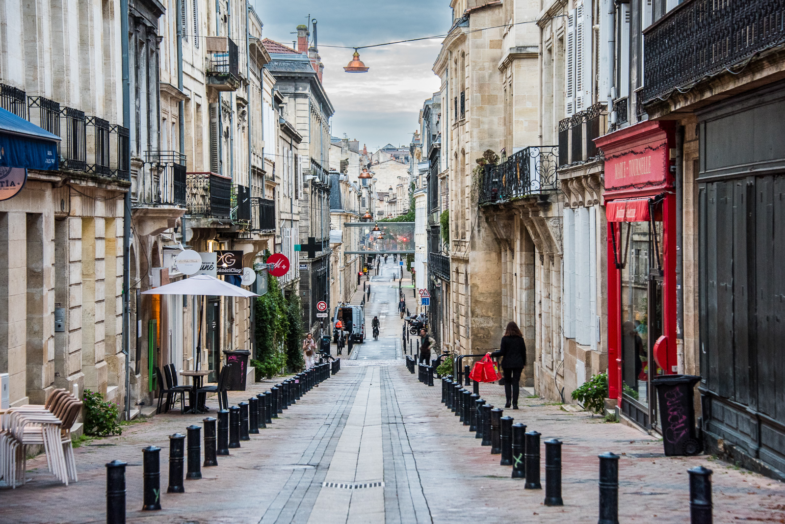
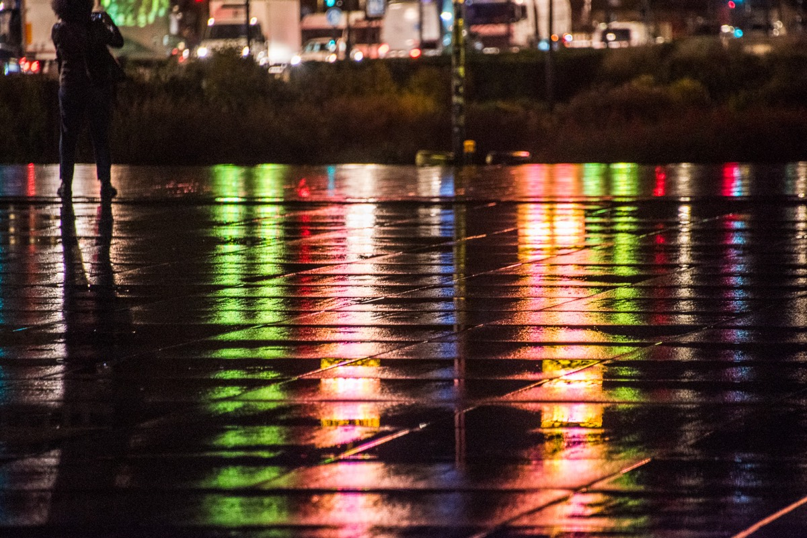
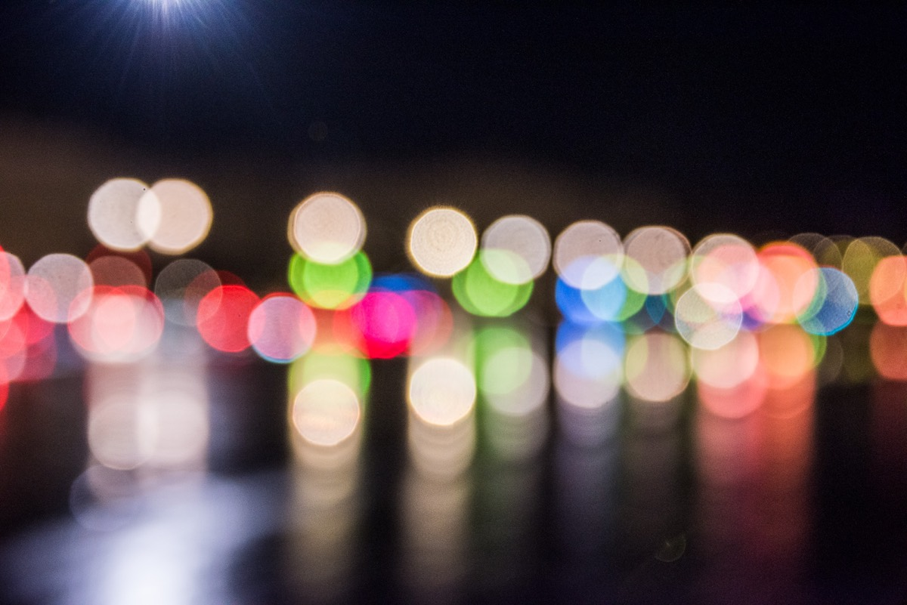

Bordeaux in Context:
A Swamp That Became UNESCO
The guide runs this tour for GuruWalk — a free tour platform where visitors pay what they think the tour was worth at the end. He opens by asking the group where they are all from. The answers span France, Canada, Scotland, Australia, Germany and Italy. He declares it overwhelmingly Team Canada, which seems about right.
The history of Bordeaux, he explains, can be understood through three golden ages of wealth and prosperity, each separated by periods of decline. The Romans built the first city — the original name was Burdigala — after arriving in 56 BC. The second golden age was brought by the English, who controlled the region for 300 years from the 12th century and turned its wine into a global commodity. The third, and darkest, was built on the slave trade.
Bordeaux is built on top of a gigantic bog — an ancient marshland that was partially drained in 1599 by a Dutch engineer, a technique that also worked so well north of the city that it revealed fertile soil underneath, leading to the establishment of the Médoc vineyards in the 17th century. The bog still exists beneath the streets. The mayor of Bordeaux recently rejected proposals to build a metro in the city, on the grounds that the cost of digging through and perpetually maintaining the bog is too high. The bell tower of the cathedral has been sinking by a couple of centimetres per year — for the same reason.
The year 2007 was a turning point. UNESCO designated 1,810 hectares of the city as a protected World Heritage Site. Buildings that had been blackening with coal pollution and crumbling from neglect were suddenly required by law to be maintained to a high standard, cleaned every ten years at the building owner's expense. The city that visitors see today — limestone, pale gold, gleaming — is substantially a product of the last two decades of restoration. Before UNESCO, the guide says, Bordeaux was becoming quite dilapidated.
Eleanor of Aquitaine:
Divorced, Kidnapped, Imprisoned
The Cathédrale Saint-André took over 500 years to build — the first stone laid in 1099, the final section completed in the 17th century. It is Gothic throughout, which the guide establishes through a multiple-choice exercise the group handles creditably. The gargoyles above the pointed arches are not decorative: they channel rainwater away from the stone. The large circular windows were designed to let sunlight fall directly on the tabernacle behind the altar.

The cathedral is most significant locally for one event: the marriage, in the 12th century, of Eleanor of Aquitaine. Her story takes most of the stop.
Eleanor was 14 when her father died on pilgrimage in northern Spain, leaving her as Duchess of Aquitaine — a kingdom covering much of what is now southwest France, including Bordeaux. Her father's dying wish to his friend King Louis VI of France was to look after Eleanor. Louis's solution: marry her to his son, Louis, who was 19. They were married in this cathedral.
The marriage lasted fifteen years and produced two daughters. No sons. Eleanor publicly blamed Louis. She was, by all accounts, formidably outspoken for a 12th-century duchess — interested in crusades, education, politics and war. Louis felt undermined. Eleanor grew tired of Louis. She travelled to Rome, demanded an audience with the Pope, and secured an annulment on the grounds that she and Louis were fourth cousins — interfamily marriages being forbidden by the Church. She was 29, single, and intended to stay that way.
She managed eight weeks of independence before people started trying to kidnap her. The logic was sound: marry Eleanor by force and you inherit Aquitaine. For her own safety, she decided she needed to remarry. She chose Henry Plantagenet, Duke of Normandy. Several months after the wedding, Henry's father died, making him King Henry II of England. Eleanor, former Queen of France, became Queen of England. Aquitaine merged with England under one monarchy. This began 300 years of English rule over Bordeaux and the golden age of the wine trade.
Eleanor and Henry had eight children together, including Richard Lionheart and John Lackland (known to most people through the story of Robin Hood). In later life, Eleanor conspired with her sons against Henry. Henry won; he forgave the sons but imprisoned Eleanor for fifteen years. On his death, Richard Lionheart freed her. She was 77. She outlived all ten of her children, retired to an abbey in the Loire Valley and died at 82.
Three Hundred Years of English Rule
& the Cannons Aimed at His Own People
The English presence in Bordeaux lasted from Eleanor's marriage in the 12th century until the Battle of Castillon in 1453 — the final engagement of the Hundred Years War, fought an hour from the city. The French were victorious. The English surrendered. Bordeaux had been English for 300 years, and its population was not particularly pleased to be French again.

The French king's response to a sullen, recently-reacquired city was to stop the wine trade and raise taxes. The golden age of wine turned into a dark age. The king, visiting Bordeaux and paranoid about his own population, stayed in the Porte Cailhau — the old city gate — which the guide points out as the tour passes. Look up at the top: the cannon ports and arrow slits on the Porte Cailhau face inward, toward the city, not outward toward any external enemy. The king was more afraid of his own people than of anyone outside the walls.
Bordeaux was a walled city from the 10th century until 1752, when the walls were finally torn down to allow trade to flow more freely. The Porte Cailhau is the best surviving remnant of those walls.
The 225-Litre Barrel
& Why Wine Is Not Vegan
Small doors set into the lower sections of buildings throughout central Bordeaux are not for storing prisoners or animals, as some visitors guess. They were built to fit the Bordeaux barrel of wine — 225 litres exactly, a figure that sounds arbitrary but is derived from the English imperial system. The English shipped wine in 50-gallon barrels. An English imperial gallon is 4.5 litres. Fifty times 4.5 equals 225. The entire Bordeaux barrel market is still based on a measurement from an English system that England itself abandoned centuries ago.
Wine aged in French oak barrels acquires tannins and oak aromas, but also a quantity of sediment that needs to be removed before bottling. The traditional method — still used — is called fining: egg whites are added to the wine, the particles bind to them, and the whole falls to the bottom of the barrel. The wine is then filtered clear. This is why wine is not vegan. It has egg white in it.
Fifty egg whites per barrel leaves quite a lot of egg yolks. In the 17th century, these were donated to a local convent of nuns. At the same time, the ports of Bordeaux were receiving quantities of rum, sugar and vanilla from the colonies. The nuns combined the surplus egg yolks with these imported ingredients and created the canelé — a small, deeply caramelised, custardy pastry that is Bordeaux's most distinctive food. You must not leave Bordeaux without trying one.
The Triangular Trade
& 3,000 Mascarons
The third golden age of Bordeaux — the one that paid for the neoclassical architecture lining its boulevards, the Grand Théâtre, the Place de la Bourse — was built on the slave trade. Bordeaux was the second largest slave port in Europe after Liverpool. The guide is direct about this; it is not a footnote.
In 1671, the first ship set sail from the Garonne loaded with local produce — wine, textiles, weapons. It crossed the Atlantic to the coast of Africa, where the cargo was exchanged for enslaved people. The enslaved people were transported to the Americas and the Caribbean and exchanged for coffee, cotton, sugar, spices and rum — none of which Europe could produce for itself. These goods were brought back to Bordeaux and sold across Europe at substantial margins.
Bordeaux became extremely wealthy. With that money, it built the city you see today. The mascarons — the carved faces on the facades of the 18th-century buildings, of which there are over 3,000 in the city — are based on the faces of slave traders and enslaved people. They are inspired by Greek mythology, which used grotesque faces to ward off evil spirits, but the human models were real.
This history was not always openly discussed in Bordeaux. Today the Musée d'Aquitaine has a permanent exhibition on the triangular trade and on all three golden ages. The guide recommends it without qualification — five minutes' walk from the start of the tour, free on the first Sunday of the month.
The Grand Théâtre &
Bordeaux Is Not a Small Paris
The Grand Théâtre was built in 1780, designed by Victor Louis in neoclassical style — Corinthian columns, nine muses and three goddesses on the roofline, a Baccarat crystal chandelier inside. It was completed nine years before the French Revolution, so the wealthy audience it was designed for was about to have a difficult decade. The Intercontinental Hotel across the square, also by Victor Louis and in exactly the same style, was built to house them when they visited.

Parisians visiting Bordeaux often remark that it looks like a small Paris. The guide takes evident pleasure in correcting this. All the streets and buildings they are thinking of were designed by an 18th-century architect called Tourny. Another man came to Bordeaux, saw Tourny's design, fell in love with it, and was later given the commission to build Paris — replicating Tourny's work on a larger scale. The man who built Paris is called Haussmann. Bordeaux is not a small Paris. Paris is a big Bordeaux. The interior staircase of the Paris Opéra Garnier was inspired by the staircase of the Grand Théâtre, which was built first.
Goya in Exile,
a Headless Coffin & a Reversing Van
The Baroque church on this square — heavily ornamented, cherubic angels on the columns, a rosary-bearing Dominican saint in the tympanum — is Notre-Dame. Its architecture style is unmistakable once the guide has explained the telltale signs: an ornamental and detail overload, chubby decorative figures, a heavily carved exterior. It is most famous locally for the funeral held here in 1828.
Francisco Goya came to Bordeaux in political exile after the ideas of the French Revolution influenced his painting to the point where the Spanish authorities found him uncomfortable. He spent the last four years of his life here and died in 1828. His funeral was held in this church; he was buried in Bordeaux.
In 1899, the Spanish government, having reconsidered its treatment of Goya, asked the French to return his body for burial in Spain. The French agreed. When the coffin was opened: Goya's head was missing. It has never been found. Multiple theories — a jealous rival, a doctor wanting to study his brain, an art collector — are all speculative. Nobody knows. His headless remains were sent to Spain regardless.
In the 20th century, to thank the French, Spain gifted Bordeaux a complete statue of Goya, which stood in the square until five months before the tour. A council worker reversing a van knocked it off its plinth. The statue is currently being repaired. The government says it should be back between this year and the next ten.
The Water Mirror
& What Was There Before
The Place de la Bourse — the stock exchange square — was built in 1749 by Jacques-Ange Gabriel, the same architect responsible for the Place de la Concorde in Versailles. Louis XV commissioned it to demonstrate three things: the power and authority of the king over the city, the wealth of Bordeaux, and a welcoming openness to architecture — achieved by the semicircular shape of the square, its open arms facing the river.

The Three Graces fountain at the centre replaced successive statues of Louis XV and then Napoleon, both of which were torn down in successive political upheavals. The fountain has been there since, representing the three daughters of Zeus: splendour, joy and abundance.
The water mirror in front of the Place de la Bourse was built in 2006 and was one of the final elements that tipped the city toward UNESCO designation in 2007. Inspired by the reflections seen during Venetian flooding in San Marco Square, it is a thin sheet of water — sometimes misted, sometimes still — that creates a perfect mirror reflection of the neoclassical facade behind it. It is the first image that appears when you Google the word Bordeaux.
Before the water mirror was built, this entire space was a car park. Hundreds of cars were the first thing that greeted you when you arrived in Bordeaux from the river. The parking has since been relocated underground. The entire Place de la Bourse embankment was restructured in the 2000s. The best time to photograph the water mirror is after sunset, on a clear still evening, with the lights of the square reflected in the water. No rain, no wind, no children running through it.
After the Tour:
Where to Go Next
The guide ends the tour at the Place des Quinconces, near the Monument aux Girondins — the column built between 1893 and 1902 to commemorate the Girondin political party from Bordeaux, executed by guillotine on Robespierre's orders during the Terror. The angel at the top holds a broken chain: freedom, triumphing over oppression.
Two neighbourhoods worth exploring that the tour does not reach:
Saint-Michel, thirty minutes on foot to the south: the student quarter, the market, and what the guide calls the Bordeaux breakfast — half a dozen oysters and a glass of white wine for €12 at the Marché des Capucins, open Tuesday to Sunday from 10am to 2:30pm. The Bay of Arcachon, source of the oysters, is visible on any wine region map as the body of water between the left bank and the Atlantic.
Chartrons, five minutes north: the old wine merchants' district, with antique shops, good restaurants and, most usefully, Les Caves de Saint-James. This wine bar and wine merchant operates at wholesale prices — 1,100 wines by the bottle, 30 by the glass, and a tasting card system that lets you sample 30ml of anything. The guide has an arrangement with the owner: coupons available at the end of the tour entitling the holder to a first glass free. He hands them out to everyone.